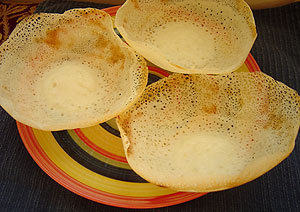

Ingredients
- Ingredient 1 - Flour
- Ingredient 2 - water
- Ingredient 3 - Yeast
- Ingredient 4 - Coconut milk
Cooking Instructions
- Step 1: Mix yeast, sugar, and warm water together
- Step 2: Add the yeast mixture to rice flour and salt.
- Step 3: Add coconut milk to the mixture.
- Step 4: Cover the bowl and let rise.
- Step 5: Heat a pan over medium heat.
- Step 6: Add a small amount of oil to the pan.
- Step 7: Add a ladle-full of batter and swirl it around the pan.
- Step 8: Remove from the pan carefully and enjoy.